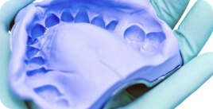
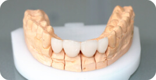
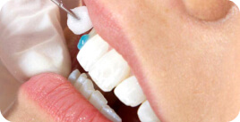

<div class="services-6">
    <div class="container-fluid">
        <div class="row">
            <div class="col-xl-10 offset-xl-2">
                <div class="container">
                    <div class="services-6__block">

                        <div class="container-small">

                            <div class="title-1 color-red">Этапы лечения</div>

                            <div class="row">
                                <div class="col-md-4">
                                    <div class="services-6__block_img">
                                        
                                        <div class="services-6__block_img_count bg-red color-white">1</div>
                                    </div>
                                    <div class="title-5">Подготовка зуба</div>
                                    <p>
                                        Под анестезией проводят препарирование твердых тканей и определяют цвет будущей вкладки. Затем
                                        снимают два слепка: с верхней и нижней челюсти. Пациент уходит с временной пломбой.
                                    </p>
                                </div>
                                <div class="col-md-4">
                                    <div class="services-6__block_img">
                                        
                                        <div class="services-6__block_img_count bg-red color-white">2</div>
                                    </div>
                                    <div class="title-5">Изготовление винира</div>
                                    <p>
                                        Происходит в зуботехнической лаборатории. В соответствии со слепками из гипса отливаются модели
                                        челюстей, моделируется вкладка, затем она полимеризуется в специальной печи под действием
                                        высокой температуры и давления. Именно благодаря этому процессу вкладка приобретает необходимые
                                        физико-механические свойства, близкие к таковым у твердых тканей зуба. После финишной обработки
                                        - пришлифовки, полировки, глазурования - вкладка готова к фиксации в полости рта.
                                    </p>
                                </div>
                                <div class="col-md-4">
                                    <div class="services-6__block_img">
                                        
                                        <div class="services-6__block_img_count bg-red color-white">3</div>
                                    </div>
                                    <div class="title-5">Фиксация винира</div>
                                    <p>
                                        Производится на специальный цемент в условиях абсолютного отстутсвия влаги.
                                    </p>
                                </div>
                            </div>

                        </div>
                        <!-- /.container-small -->

                    </div>
                    <!-- /.services-6__block -->
                </div>
                <!-- /.container -->
            </div>
        </div>
    </div>
</div>
<!-- /.services-6 -->